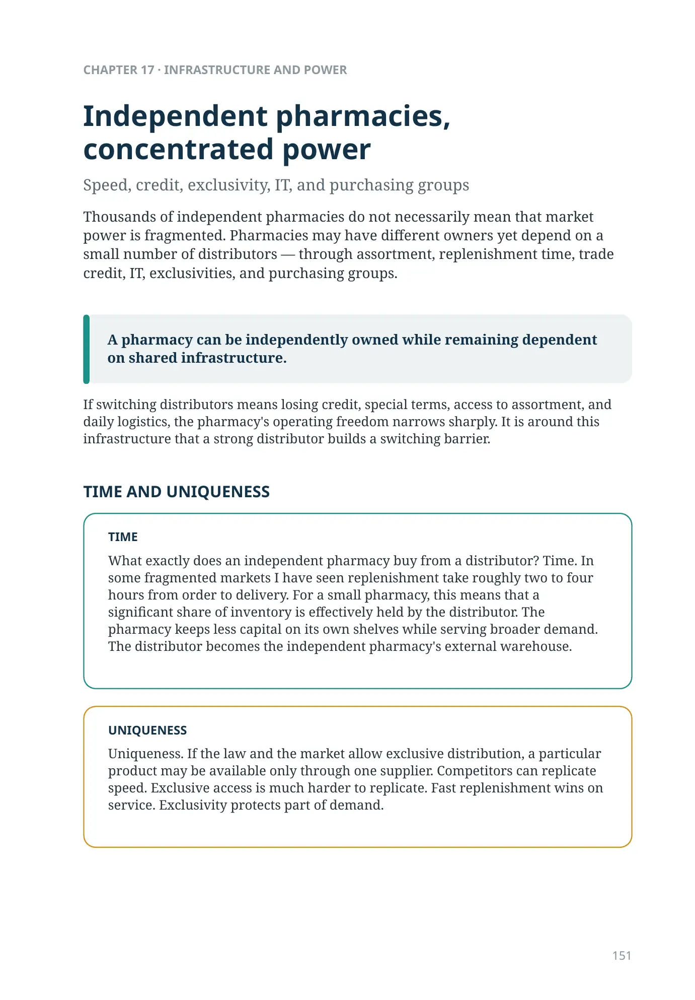
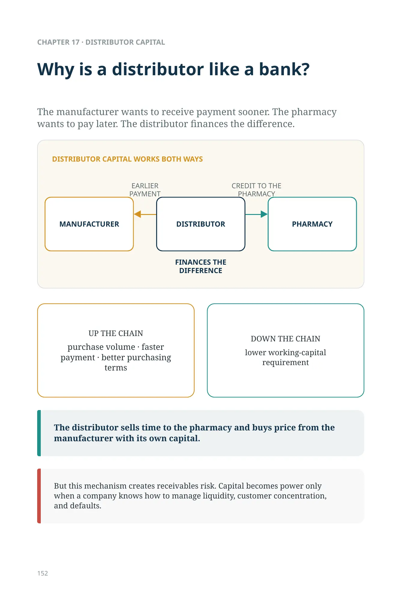
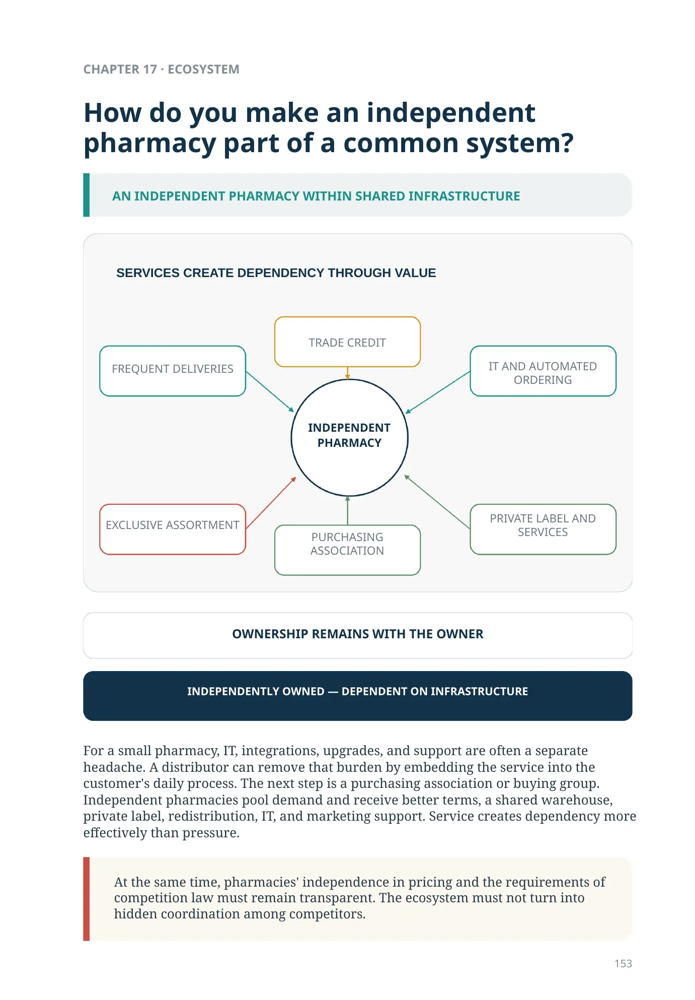
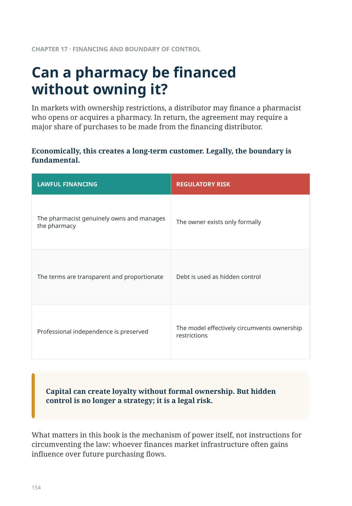
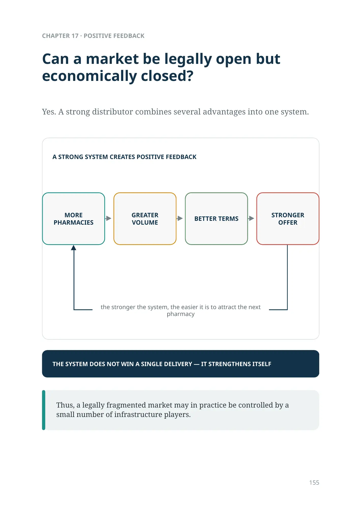
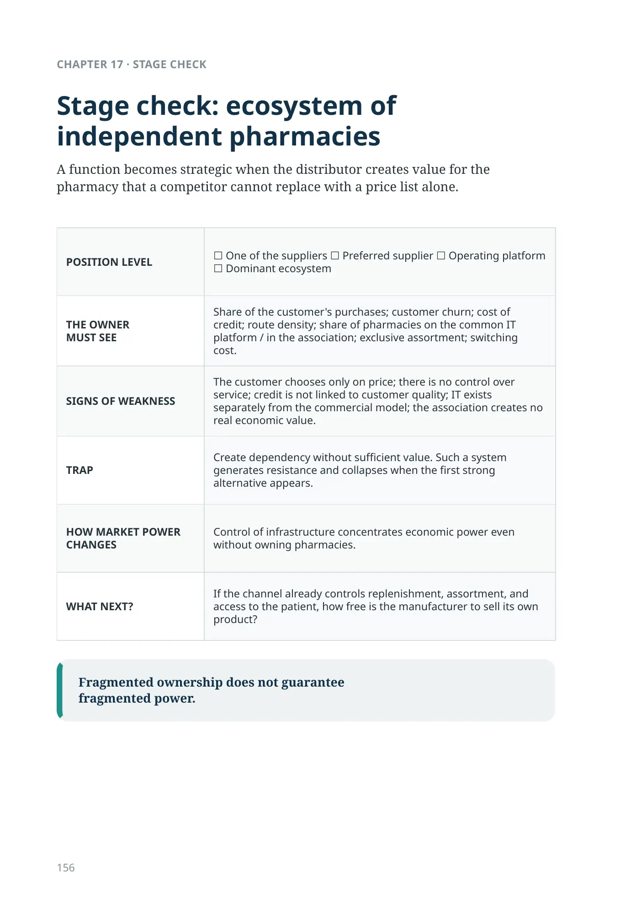
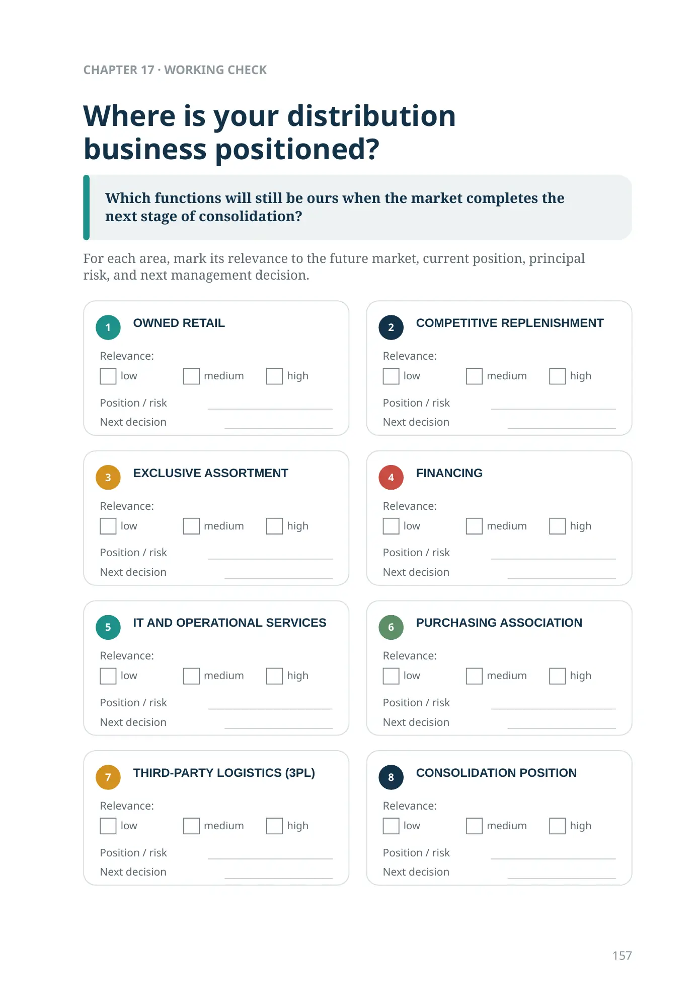
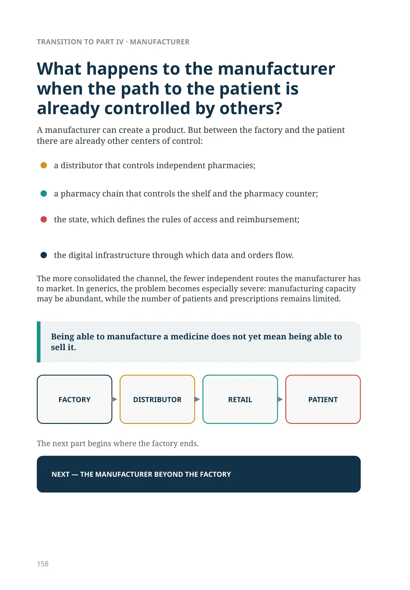

Independent pharmacies, concentrated power
Speed, credit, exclusivity, IT, and purchasing groups
Thousands of independent pharmacies do not necessarily mean that market power is fragmented. Pharmacies may have different owners yet depend on a small number of distributors — through assortment, replenishment time, trade credit, IT, exclusivities, and purchasing groups.
A pharmacy can be independently owned while remaining dependent on shared infrastructure.
If switching distributors means losing credit, special terms, access to assortment, and daily logistics, the pharmacy's operating freedom narrows sharply. It is around this infrastructure that a strong distributor builds a switching barrier.
TIME AND UNIQUENESS
What exactly does an independent pharmacy buy from a distributor? Time. In some fragmented markets I have seen replenishment take roughly two to four hours from order to delivery. For a small pharmacy, this means that a significant share of inventory is effectively held by the distributor. The pharmacy keeps less capital on its own shelves while serving broader demand. The distributor becomes the independent pharmacy's external warehouse.
Uniqueness. If the law and the market allow exclusive distribution, a particular product may be available only through one supplier. Competitors can replicate speed. Exclusive access is much harder to replicate. Fast replenishment wins on service. Exclusivity protects part of demand.
Why is a distributor like a bank?
The manufacturer wants to receive payment sooner. The pharmacy wants to pay later. The distributor finances the difference.
UP THE CHAIN
- purchase volume
- faster payment
- better purchasing terms
DOWN THE CHAIN
lower working-capital requirement
The distributor sells time to the pharmacy and buys price from the manufacturer with its own capital.
But this mechanism creates receivables risk. Capital becomes power only when a company knows how to manage liquidity, customer concentration, and defaults.
How do you make an independent pharmacy part of a common system?
For a small pharmacy, IT, integrations, upgrades, and support are often a separate headache. A distributor can remove that burden by embedding the service into the customer's daily process. The next step is a purchasing association or buying group. Independent pharmacies pool demand and receive better terms, a shared warehouse, private label, redistribution, IT, and marketing support. Service creates dependency more effectively than pressure.
At the same time, pharmacies' independence in pricing and the requirements of competition law must remain transparent. The ecosystem must not turn into hidden coordination among competitors.
SERVICES CREATE DEPENDENCY THROUGH VALUE
OWNERSHIP REMAINS WITH THE OWNER
INDEPENDENTLY OWNED — DEPENDENT ON INFRASTRUCTURE
Can a pharmacy be financed without owning it?
In markets with ownership restrictions, a distributor may finance a pharmacist who opens or acquires a pharmacy. In return, the agreement may require a major share of purchases to be made from the financing distributor.
Economically, this creates a long-term customer. Legally, the boundary is fundamental.
| LAWFUL FINANCING | REGULATORY RISK |
|---|---|
| The pharmacist genuinely owns and manages the pharmacy | The owner exists only formally |
| The terms are transparent and proportionate | Debt is used as hidden control |
| Professional independence is preserved | The model effectively circumvents ownership restrictions |
Capital can create loyalty without formal ownership. But hidden control is no longer a strategy; it is a legal risk.
What matters in this book is the mechanism of power itself, not instructions for circumventing the law: whoever finances market infrastructure often gains influence over future purchasing flows.
Can a market be legally open but economically closed?
Yes. A strong distributor combines several advantages into one system.
the stronger the system, the easier it is to attract the next pharmacy
Thus, a legally fragmented market may in practice be controlled by a small number of infrastructure players.
A strong system creates positive feedback
Stage check: ecosystem of independent pharmacies
A function becomes strategic when the distributor creates value for the pharmacy that a competitor cannot replace with a price list alone.
| POSITION LEVEL | ☐ One of the suppliers ☐ Preferred supplier ☐ Operating platform ☐ Dominant ecosystem |
|---|---|
| THE OWNER MUST SEE |
Share of the customer's purchases; customer churn; cost of credit; route density; share of pharmacies on the common IT platform / in the association; exclusive assortment; switching cost. |
| SIGNS OF WEAKNESS | The customer chooses only on price; there is no control over service; credit is not linked to customer quality; IT exists separately from the commercial model; the association creates no real economic value. |
| TRAP | Create dependency without sufficient value. Such a system generates resistance and collapses when the first strong alternative appears. |
| HOW MARKET POWER CHANGES | Control of infrastructure concentrates economic power even without owning pharmacies. |
| WHAT NEXT? | If the channel already controls replenishment, assortment, and access to the patient, how free is the manufacturer to sell its own product? |
Fragmented ownership does not guarantee fragmented power.
Where is your distribution business positioned?
Which functions will still be ours when the market completes the next stage of consolidation?
For each area, mark its relevance to the future market, current position, principal risk, and next management decision.
What happens to the manufacturer when the path to the patient is already controlled by others?
A manufacturer can create a product. But between the factory and the patient there are already other centers of control:
- a distributor that controls independent pharmacies;
- a pharmacy chain that controls the shelf and the pharmacy counter;
- the state, which defines the rules of access and reimbursement;
- the digital infrastructure through which data and orders flow.
The more consolidated the channel, the fewer independent routes the manufacturer has to market. In generics, the problem becomes especially severe: manufacturing capacity may be abundant, while the number of patients and prescriptions remains limited.
Being able to manufacture a medicine does not yet mean being able to sell it.
The next part begins where the factory ends.